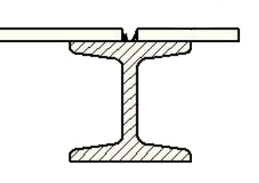
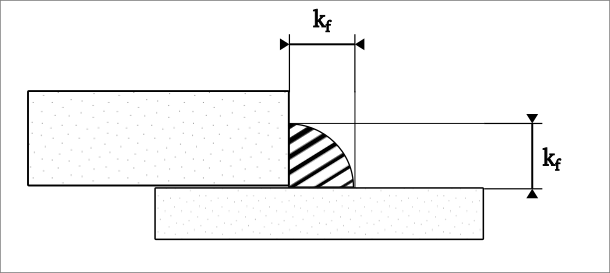
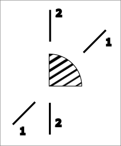

1.3. Расчёт сварных швов, соединяющих настил и балку настила
Подбор катета углового сварного шва, воспринимающего распор настила
Постановка задачи
Настил крепится к балкам настила сплошными угловыми сварными швами (Рис. 1). Швы воспринимают распор $H$, определённый при расчёте настила (п. 1.2). Расчёт ведётся на полоску настила шириной 1 см, поэтому расчётная длина шва принимается $l_w' = 1$ см, а внешнее усилие $N = H$.
Материалы для сварки назначаются по классу стали согласно ГОСТ 9467-75 (покрытые электроды) или ГОСТ 8050-85 (сварочная проволока в среде углекислого газа).

Сварной шов под увеличением выглядит так:

Требуется определить подходящий катет шва.
Порядок расчёта
-
Условие прочности углового шва
Сперва на перва нам нужно определиться по какому металлу шва будем подбирать катеты. Есть два металла. Первый - металл самого сварного шва, на Рис.3 сечение этого расчета указано под номером 1-1. Второй - по металлу сплавления, сечение 2-2. В первом случае будет рваться сам шов. Во втором шов как бы будет отрываться от того к чему приварен.

Рис. 3 1-1 по металлу шва; 2-2 по металлу сплавления. Нужно узнать что порвётся раньше. В СП 16.13330.2017 главе 6 таблица 4 указаны следующие формулы.
Расчетные сопротивление сварных соединений по металлу шва:
$$R_{wf} = \frac{0{,}55 \cdot R_{wun}}{\gamma_{wm}}$$Расчётное сопротивление сварных соединений границы сплавления:
$$R_{wz} = 0{,}45 \cdot R_{un}$$$R_{un}$ - нормативное временное сопративление, берете из приложения В для вашей стали. $R_{wun}$ - нормативное сопративление металла шва из приложения Г, таблица 2, на самом деле там же можно взять сразу и расчетное сопративление $R_{wf}$, честно говоря хз зачем нужна формула, если есть сразу готовое значение, берите сразу его. $\gamma_{wm}$ — коэффициент надёжности по материалу шва ($1{,}25$ при $R_{wun} \le 490$ МПа; $1{,}35$ при $R_{wun} \ge 490$ МПа)
Находите оба значения и домножаете на соответствующие коэффициенты из таблицы 39 главы 14 СП 16.13330.2017:
$$\beta_f R_{wf}$$ $$\beta_z R_{wz}$$Выбираете наименьший и спользуте его для определения какета шва.
-
Требуемый катет шва
$$k_f \ge \frac{N}{\beta_{f} \cdot l_w' \cdot R_{wf} \cdot \gamma_c}$$
или
$$k_f \ge \frac{N}{\beta_{z} \cdot l_w' \cdot R_{wz} \cdot \gamma_c}$$$N$ — растяшивающее усилие, в нашем случае распор $H$; $l_w'$ — расчетная длина сварного шва, в нашем случае равна 1 см; $ \gamma_c$ — коэффициент условий работы конструкции (табл. 1 СП 16.13330.2017). -
Конструктивные требования к катету
$$k_{f,\min} \le k_f \le k_{f,\max} = 1{,}2 \cdot t_{\min}$$
где $k_{f,\min}$ — минимальный катет шва по табл. 38 СП 16.13330.2017 (зависит от предела текучести стали и наибольшей толщины свариваемых элементов); $t_{\min}$ — меньшая из толщин соединяемых элементов.
Если расчётное значение получается меньше конструктивного минимума, принимается $k_f = k_{f,\min}$.